건축설비기사 (2019-03-03 기출문제)
1과목: 건축일반
1. 학교건축배치계획에서 분산 병렬형에 관한 설명으로 옳지 않은 것은?
- 구조계획이 간단하고 시공하기 쉽다.
- 놀이터 및 정원이 계획된다.
- 부지를 최대한 효율적으로 이용할 수 있다.
- 각 교실은 일조, 통풍 등 환경조건이 균등하게 된다.
(정답률: 71%)

2. 사무소 건축에 있어서 개방식 배치에 관한 설명으로 옳지 않은 것은?
- 소음이 들리고 독립성이 결핍되어 있는 결점이 있다.
- 칸막이벽이 없어서 개실 시스템보다 공사비가 적게 든다.
- 공간에 융통성이 없어 전면적을 유용하게 이용할 수 없다.
- 큰 사무실 형식에 많이 채용되며 임대자가 직접 이동식 파티션 등으로 적절한 프라이버시를 확보한다.
(정답률: 84%)
3. 도서관 계획에 관한 설명으로 옳지 않은 것은?
- 서고 내에서는 기계환기 및 인공조명을 해야 한다.
- 대지는 장래 계획에 대해서 충분한 여유를 가져야 한다.
- 참고실은 목록실 및 출납실로부터 먼 곳에 배치하는 것이 좋다.
- 이용자와 직원, 자료의 출입구를 별도로 계획하는 것이 바람직하다.
(정답률: 87%)
4. 건축물 기초의 부동침하가 발생하였을 때 추정되는 원인과 가장 거리가 먼 것은?
- 지하수위가 변경되었을 경우
- 이질지정을 하였을 경우
- 기초의 배근량이 부족했을 경우
- 건축물을 일부 중측한 경우
(정답률: 67%)
5. 상점에서 고객 흐름이 빠르고 부문별 진열이 필요한 대량 판매 상품인 침구, 가전, 서점 등에 가장 적합한 진열대 배치 형태는?
- 직렬 배치형
- 굴절 배치형
- 환상 배치형
- 복합 배치형
(정답률: 74%)
6. 백화점의 수송설비 계획에 관한 설명으로 옳지 않은 것은?
- 중소규모 백화점인 경우 엘리베이터는 주 출입구 부근에 설치한다.
- 에스컬레이터는 수송량에 엘리베이터보다 유리하다.
- 에스컬레이터는 주 출입구에 가까워야 하며, 고객이 곧 알아볼 수 있는 위치라야 한다.
- 엘리베이터는 고객용 이외에 사무용, 화물용도 따로 있는 곳이 좋다.
(정답률: 77%)
7. 무량판(Flat Slab)구조에 관한 설명으로 옳지 않은 것은?
- 무량판의 슬래브의 두께가 보(Girder)로 거치되는 슬래브보다 두꺼워진다.
- 철근 배근이 복잡하여 공사기간이 길어진다.
- 기둥 주변에는 철근을 보강해야 한다.
- 가급적 기둥 주변에는 개구부(Opening)를 두지 않도록 한다.
(정답률: 74%)
8. 한식주택과 양식주택에 관한 설명으로 옳지 않은 것은?
- 한식주택은 개방형이며 실의 분화로 되어 있다.
- 양식주택의 방은 일반적으로 단일용도로 사용된다.
- 양삭주택은 입식 생활이다.
- 한식주택의 가구는 부차적 존재이다.
(정답률: 80%)
9. 병원건축의 형식 중 각 건물은 3층 이하의 저층 건물로 구성하고 외래부, 부속진료시설, 병동을 각각 별동으로 분산시켜 복도로 연결하는 방식은?
- 엘보 엑세스(Elbow acces)
- 분관식(Pavilion type)
- 집중식(Block type)
- 애리나형(Arena type)
(정답률: 85%)
10. 주택공간의 기능적 구성에 따른 평면계획에 관한 설명으로 옳지 않은 것은?
- 전가족을 위한 거실공간은 남쪽에 배치하여 겨울철 충분한 일광을 받게 해야 한다.
- 소규모주택에 있어서 복도의 설치는 비경제적이다.
- 화장실, 저장실 등은 종일 햇빛이 들지 않는 북쪽에 배치하는 것이 좋다.
- 부엌은 겨울철 작업에 유리하도록 남쪽에 배치하는 것이 바람직하다.
(정답률: 77%)
11. 다음 용어의 단위로서 옳지 않은 것은?
- 열전도율 : W/m·K
- 열전달율 : W/m2·K
- 열관류율 : W/m3·K
- 열용량 : J/K
(정답률: 76%)
12. 벽돌쌓기 방식 중 불식쌓기에 관한 설명으로 옳지 않은 것은?
- 통줄눈이 생겨서 영식쌓기에 비하여 튼튼하지 않은 편이다.
- 미관을 위주로 하는 벽체 또는 벽돌담 등에 쓰인다.
- 벽의 모서리나 끝에는 반절 또는 이오타막을 쓰지 않고 칠오토막을 사용한다.
- 한 켜에서 마구리와 길이를 번갈아 놓아 쌓고, 다음 켜는 마구리가 길이의 중심부에 놓게 쌓는다.
(정답률: 68%)
13. 학교 교실의 채광계획에 관한 설명으로 옳은 것은?
- 채광은 인공조명을 주로하고, 자연채광은 보조적 역할을 한다.
- 조명수준은 평상시 100 lx 정도가 가장 적당하다.
- 남측벽면에서 최대한 직사광선을 받을 수 있도록 루버설치를 자제 하는 것이 좋다.
- 실내마감은 휘도대비를 고려하여 반사율이나 명도가 높은 재료로 마감한다.
(정답률: 51%)
14. 리조트 호텔(Resort hotel)에 속하지 않는 것은?
- 클럽 하우스
- 터미널 호텔
- 온천 호텔
- 산장 호텔
(정답률: 81%)
15. 실내음향설계 시 주의할 사항으로 옳지 않은 것은?
- 직접음과 반사음의 시간차를 가능한 크게 하여 충분한 음보강이 되도록 한다.
- 강연이나 연극 등 언어를 주사용 목적으로 할 경우 잔향시간은 비교적 짧게 처리한다.
- 방해가 되는 소음이나 진동을 완전히 차단하도록 한다.
- 실의 어느 위치에서나 음 분포가 균등하도록 한다.
(정답률: 74%)
16. 아래 그림은 오디토리엄의 단면도이다. 흡음력이 가장 큰 재료를 사용해야 할 위치는?
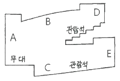
- A, B
- B, D
- B, C
- D, E
(정답률: 82%)
17. 주택의 동선계획에 관한 설명으로 옳지 않은 것은?
- 동선의 길이는 가능한 한 짧은 것이 좋다.
- 다른 동선과 가능한 한 교차시킨다.
- 빈도가 높은 동선은 짧게 계획한다.
- 동선은 단순하고 명쾌하게 계획한다.
(정답률: 86%)
18. 철근콘트리트구조에서 주근(主筋)이라고 볼 수 없는 것은?
- 캔틸레버 보의 상단 축방향 철근
- 압축력을 받는 기둥의 축방향 철근
- 양단이 연속되어 있는 보에서 단부의 상단 축방향 철근
- 주변을 고정이라고 간주하는 슬래브의 장변 방향 철근
(정답률: 55%)
19. 철골구조 용접에서 모재가 녹아 용착금속이 채워지지 않고 홈으로 남게 되는 부분은?
- 언더컷
- 블로홀
- 오버랩
- 피트
(정답률: 75%)
20. 사무소건물에 아트리움(atrium)을 도입하는 이유와 거리가 먼 것은?
- 에너지 절약에 유리하다.
- 사무공간에 빛과 식물을 도입하여 자연을 체험하게 한다.
- 근로자들의 상호교류 및 정보교환의 장소를 제공한다.
- 필요 시 보다 넓은 사무공간을 확보할 수 있다.
(정답률: 84%)
2과목: 위생설비
21. 오수의 생물화학적 처리법 중 생물막법에 속하지 않는 것은?
- 접촉산화방식
- 살수여상방식
- 표준활성오니방식
- 회전원판 접촉방식
(정답률: 63%)
22. 스테인리스 강관에 관한 설명으로 옳은 것은?
- 급수용 배관으로는 사용할 수 없다.
- 저온 충격성이 작아 한랭지 배관이 곤란한다.
- 관의 두께에 따라 L, M, N 형으로 분류할 수 있다.
- 단위 길이당 중량이 가벼워 취급, 운반이 용이하다.
(정답률: 69%)
23. 급수설비에 사용되는 펌프의 양량이 2000L/min, 전양정이 10m 일 경우, 이 펌프의 축동력은? (단, 펌프의 효율은 55% 이다.)
- 3.52 W
- 3.52 kW
- 5.94 W
- 5.94 kW
(정답률: 54%)
24. 다음과 같은 경우, 팽창관의 입상높이 h는 최소 얼마 이상으로 하여야 하는가? (단, 급탕 및 급수온도는 각각 80℃, 6℃이며, 이 때의 물의 밀도는 각각 0.9718 kg/L, 0.99997 kg/L 이다.)
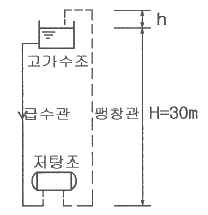
- 0.83 m
- 0.87 m
- 0.90 m
- 0.93 m
(정답률: 56%)
25. 다음 설명에 알맞은 밸브의 종류는?
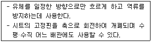
- 게이트밸브
- 풋형 체크밸브
- 스윙형 체크밸브
- 리프트형 체크밸브
(정답률: 72%)
26. 다음 중 간접배수로 하여야 하는 기기에 속하지 않는 것은?
- 세탁기
- 대변기
- 제빙기
- 식기세척기
(정답률: 80%)
27. 수격작용의 방지대책으로 옳지 않은 것은?
- 감압밸브 설치
- 수격방지기 설치
- 바이패스관 설치
- 펌프의 수평주관 길이 증가
(정답률: 71%)
28. 수도 본관에서 수직높이 3m인 곳에 세정밸브형 대변기가 수도직결방식의 급수방식으로 설치되었다. 이 대변기의 사용을 위해 필요한 수도 본관의 최저 압력은? (단, 세정밸브의 최저필요압력은 70kPa, 수도 본관에서 세정밸브까지의 마찰손실수두는 1mAq 이다.)
- 74 kPa
- 100 kPa
- 110 kPa
- 470 kPa
(정답률: 67%)
29. 수질과 관련된 용어에 관한 설명으로 옳지 않은 것은?
- COD는 화학적 산소요구량을 말한다.
- BOD는 생물화학적 산소요구량을 말한다.
- SS는 증발잔류물로서 부유물과 용해성 물질의 합계를 말한다.
- 총질소는 무기성 및 유기성 질소의 총량을 나타낸 것이다.
(정답률: 72%)
30. 어느 배관에 15mm 세면기 1개, 20mm 소변기 2개, 25mm 대변기 2개가 연결될 때 이 배관의 관경은?
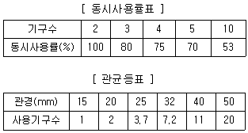
- 20 mm
- 25 mm
- 32 mm
- 40 mm
(정답률: 51%)
31. 배관설비에 사용되는 신축 이음쇠의 종류에 속하지 않는 것은?
- 루프형
- 플랜지형
- 슬리브형
- 벨로우즈형
(정답률: 69%)
32. 물의 경도에 관한 설명으로 옳지 않은 것은?
- 경도가 큰 물을 경수, 경도가 작은 물을 연수라고 한다.
- 연수는 쉽게 비누거품을 일으키지만 음료용으로는 적합하지 않다.
- 경수를 보일러 용수로 사용하면 관내부에 스케일이 생겨 전열효율이 감소된다.
- 물의 경도는 물 속에 녹아있는 칼슘, 마그네슘 등의 염류의 양을 탄산마그네슘의 농도로 환산하여 나타낸 것이다.
(정답률: 63%)
33. 펌프에 관한 설명으로 옳은 것은?
- 펌프의 축동력은 회전수에 반비례한다.
- 볼류트 펌프는 임펠러 주위에 안내날개를 갖고 있기 때문에 고양정을 얻을 수 있다.
- 펌프 1대에 임펠러 1개를 갖고 있는 것을 단단(單段)펌프라 하며 양정이 그다지 높지 않은 경우에 사용된다.
- 캐비테이션을 방지하기 위해서는 흡수관을 가능한 한 길고 가늘게 함과 동시에 관내에 공기가 체류할 수 있도록 배관한다.
(정답률: 63%)
34. 다음 설명에 알맞은 통기관은?
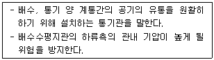
- 습통기관
- 도피통기관
- 각개통기관
- 신정통기관
(정답률: 72%)
35. 중앙식 급탕방식에 관한 설명으로 옳지 않은 것은?
- 배관으로부터 열손실이 많다.
- 급탕 개소마다 가열기의 설치 스페이스가 필요하다.
- 시공 후 기구 증설에 따른 배관 변경 공사를 하기 어렵다.
- 기계실 등에 다른 설비 기계와 함께 가열장치 등이 설치되기 때문에 관리가 용이하다.
(정답률: 78%)
36. 호텔의 주방이나 레스토라의 주방 등에서 배출되는 배수 중의 지방분을 포집하기 위하여 사용되는 포집기는?
- 오일 포집기
- 가솔린 포집기
- 그리스 포집기
- 플라스터 포집기
(정답률: 79%)
37. 온도 10℃, 길이 100m인 강관에 탕이 흘러 70℃가 되었을 때, 강관의 팽창량은? (단, 강관의 선팽창계수는 1.0×10-5/℃ 이다.)
- 6 mm
- 12 mm
- 6 cm
- 12 cm
(정답률: 60%)
38. 관로의 마찰손실에 관한 설명으로 옳지 않은 것은?
- 유속이 빠를수록 관로의 마찰손실은 커진다.
- 관로의 길이가 길수록 관로의 마찰손실은 커진다.
- 유체의 밀도가 클수록 관로의 마찰손실은 작아진다.
- 관로의 내경이 클수록 관로의 마찰손실은 작아진다.
(정답률: 74%)
39. 트랩(trap)이 갖추어야 할 조건에 관한 설명으로 옳지 않은 것은?
- 자정 작용이 가능할 것
- S트랩의 경우 내부 치수가 동일할 것
- 봉수깊이는 50mm 이상 100mm 이하일 것
- 기구내장 트랩의 내벽 및 배수로의 단면 형상에 급격한 변화가 없을 것
(정답률: 62%)
40. 동시사용률이 높은 건물과 급탕설비에 관한 설명으로 옳은 것은?
- 가열부하와 최대부하의 차이가 크다.
- 일반적으로 최대부하 사용시간이 짧다.
- 일반적으로 하루에 1시간 정도의 일정시간에 사용된다.
- 가열기 능력을 크게 하고 저탕탱크는 소용량으로 계획하는 것이 효율적이다.
(정답률: 53%)
3과목: 공기조화설비
41. 실내 공기 오염의 종합적 지표로 사용되는 오염물질은?
- 미세먼지
- 이산화탄소
- 포름알데히드
- 휩라성 유기화합물
(정답률: 77%)
42. 습공기선도상의 상태점(건구온도 26℃, 상대습도 50%)에서 건구온도만을 낮출 경우 상승하는 것은?
- 상대습도
- 습구온도
- 비체적
- 엔탈피
(정답률: 61%)
43. 증기난방설비에서 증기트랩을 사용하는 가장 주된 목적은?
- 온도를 조절하기 위하여
- 공기를 배출하기 위하여
- 압력을 조절하기 위하여
- 응축수를 배출하기 위하여
(정답률: 69%)
44. 공기 2000kg/h를 증기코일로 가열하는 경우, 코일을 통과하는 공기의 온도차가 25.5℃, 증기온도에서 물의 증발잠열이 2229.52kJ/kg일 때 가열에 필요한 증기량은? (단, 공기의 정압비열은 1.01 kJ/kg·K 이다.)
- 18.2 kg/h
- 23.1 kg/h
- 40.2 kg/h
- 50.2 kg/h
(정답률: 54%)
45. 보일러의 출력 중 난방부하, 급탕부하, 배관부하, 예열부하의 합으로 표시되는 것은?
- 정미출력
- 정격출력
- 상용출력
- 과부하출력
(정답률: 69%)
46. 10m×10m×3.2m 크기의 강의실에 35명의 사람이 있을 때 실내의 이산화탄소 농도를 0.1%로 하기 위해 필요한 환기량은? (단, 1인당 CO2 발생량은 0.02m3/h·인 이며, 외기의 CO2농도는 0.03% 이다.)
- 1000 m3/h
- 1400 m3/h
- 1600 m3/h
- 2000 m3/h
(정답률: 51%)
47. 유체의 흐름방향을 한쪽으로만 제어하는 밸브는?
- 체크밸브
- 앵글밸브
- 게이트밸브
- 글로브밸브
(정답률: 70%)
48. 다음과 같은 조건에 있는 유리창을 통한 단위 면적당 취득열량은?
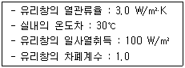
- 190 W/m2
- 270 W/m2
- 330 W/m2
- 390 W/m2
(정답률: 43%)
49. 다음 중 원심형 송풍기가 아닌 것은?
- 다익형
- 방사형
- 후곡형
- 축류형
(정답률: 49%)
50. 건물의 냉방부하 발생 요인 중 현열만으로 구성된 것은?
- 인체의 발생열량
- 벽체로부터의 취득열량
- 극간풍에 의한 취득열량
- 외기의 도입으로 인한 취득열량
(정답률: 69%)
51. 건구온도가 15℃인 공기 10kg과 건구온도 30℃인 공기 5kg을 혼합하였을 경우, 혼합공기의 온도는?
- 18℃
- 20℃
- 25℃
- 28℃
(정답률: 72%)
52. 압축식 냉동기의 구성요소 중 냉동의 목적을 직접적으로 달성하는 것은?
- 흡수기
- 증발기
- 발생기
- 응축기
(정답률: 63%)
53. 건구온도 t1=30℃, 상대습도 20%의 습공기 3000m3/h를 공기냉각기에서 냉각시켜 건구온도 t2=14℃의 공기를 만들 때 제거되는 현열량은? (단, 공기의 비열은 1.01 kJ/kg·K, 밀도는 1.2 kg/m3 이다.)
- 16.16 W
- 24.12 W
- 16.16 kW
- 24.12 kW
(정답률: 54%)
54. 건구온도 30℃, 절대습도 0.015 kg/kg'인 습공기 5kg의 전체 엔탈피는? (단, 공기의 정압비열 1.01 kJ/kg·K, 수증기 정압비열 1.85 kJ/kg·K, 0℃에서 포화수의 증발잠열 2501 kJ/kg)
- 228.77 kJ
- 343.24 kJ
- 349.62 kJ
- 425.24 kJ
(정답률: 55%)
55. 공기 취출구에서의 토출공기(1차 공기)량을 Q1, 토출공기에 의해 유인된 실내공기(2차 공기)량을 Q2라고 할 때 유인비는?
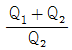
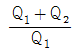
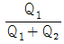
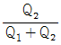
(정답률: 56%)
56. 다음 중 공조시스템에서 덕트 내에 변풍량(VAV) 유닛을 채용하는 가장 주된 이유는?
- 소음제거
- 냉온풍의 혼합
- 덕트 스페이스 감소
- 부하변동에 대한 대응
(정답률: 70%)
57. 위치수두 10mAq, 압력수도 30mAq, 속도 2.5m/s로 관 속을 흐르는 물의 전수두는?
- 13.06 mAq
- 13.24 mAq
- 40.32 mAq
- 42.54 mAq
(정답률: 62%)
58. 2중 효용 흡수식 냉동기에 관한 설명으로 옳지 않은 것은?
- 저온발생기, 고온발생기가 필요하다.
- 저압팽창밸브와 고압팽창밸브가 필요하다.
- 에너지를 절약할 수 있고 냉각탑의 용량을 줄일 수 있다.
- 단효욜 흡수식 냉동기의 응축기에서 버리던 증기의 응축열을 효율적으로 이용한 것이다.
(정답률: 56%)
59. 단일덕트 정풍량방식에 관한 설명으로 옳은 것은?
- 전수방식의 특성이 있다.
- 중간기에 외기냉방이 가능하다.
- 냉풍과 온풍을 혼합하는 혼합상자가 필요하다.
- 부하특성이 다른 다수의 실의 공조에 적합하다.
(정답률: 49%)
60. 취출구에서 수평취출기류의 도달·강하 및 상승거리에 관한 설명으로 옳지 않은 것은?
- 상승거리는 기류의 풍속 및 실내공기와의 온도차에 비례한다.
- 강하거리는 기류의 풍속 및 실내공기와의 온도차에 반비례한다.
- 취출구로부터 기류의 중심속도가 0.5m/s로 되는 곳까지의 수평거리를 최소 도달거리라고 한다.
- 취출구로부터 기류의 중심속도가 0.25m/s로 되는 곳까지의 수평거리를 최대 도달거리라고 한다.
(정답률: 57%)
4과목: 소방 및 전기설비
61. 다음 중 상자성체에 속하지 않는 것은?
- 철
- 크롬
- 구리
- 니켈
(정답률: 66%)
62. 옥외소화전설비용 수조에 관한 설명으로 옳지 않은 것은?
- 수조의 윗부분에는 청소용 배수밸브 또는 배수관을 설치하여야 한다.
- 동결방지조치를 하거나 동결의 우려가 없는 장소에 설치하여야 한다.
- 수조가 실내에 설치된 때에는 그 실내에 조명설비를 설치하여야 한다.
- 수조의 상단이 바닥보다 높은 때에는 수조의 외측에 고정식 사다리를 설치하여야 한다.
(정답률: 73%)
63. 피뢰설비에서 수뢰부시스템의 보호범위 산정방식에 속하지 않는 것은?
- 메시법
- 본딩법
- 보호각법
- 회전구체법
(정답률: 43%)
64. 동선의 길이를 2배 증가, 단면적을 1/2로 감소시키면 동선의 저항은 어떻게 변하는가?
- 2배 증가
- 1/2로 감소
- 4배 증가
- 1/4로 감소
(정답률: 67%)
65. 도시가스설비의 가스계량기 설치 장소로 적합하지 않은 곳은?
- 환기가 양호한 곳
- 공동주택의 대피공간
- 직사광선이나 빗물을 받을 우려가 없는 곳
- 가스계량기의 교체 및 유지 관리가 용이한 곳
(정답률: 78%)
66. 옥내소화전이 1층에 3개, 2층에 4개, 3층에 4개가 설치되어 있다. 옥내소화전설비의 수원의 저수량은 최소 얼마 이상이 되도록 하여야 하는가?(2021년 04월 01일 개정된 규정 적용됨)
- 2.6 m3
- 5.2 m3
- 10.4 m3
- 18.2 m3
(정답률: 65%)
67. 점광원으로부터 R[m] 떨어진 장소에서 빛의 방향과 수직인 면의 조도[lx]는? (단, 광도는 I[cd] 이다.)
- RI
- R2I
- I / R
- I / R2
(정답률: 56%)
68. V = 154sin(314t – 90°)[V]인 사인파 교류의 주파수[Hz]는?
- 30
- 40
- 50
- 60
(정답률: 45%)
69. 정격전압 220[V]에서 1210[W]의 전력을 소비하는 단상전열기를 200[V]에서 사용하면 소비전력[W]은?
- 1000
- 1089
- 1100
- 1210
(정답률: 33%)
70. 다음의 엘리베이터 조작방식 중 무운전원 방식에 속하는 것은?
- 카 스위치 방식
- 승합전자동 방식
- 레코드 컨트롤 방식
- 시그널 컨트롤 방식
(정답률: 60%)
71. 폐쇄형스프링클러헤드를 사용하는 스프링클러설비의 수원의 저수량 산정과 관련하여, 스프링클러설비 설치장소가 아파트인 경우, 스프링클러헤드의 기준개수는?
- 10개
- 20개
- 30개
- 40개
(정답률: 60%)
72. 다음 중 물분무소화설비의 소화작용과 가장 관계가 먼 것은?
- 냉각효과
- 질식효과
- 희석효과
- 부촉매효과
(정답률: 68%)
73. 축전지의 충전 방식 중 필요할 때마다 표준 시간율로 소정의 충전을 하는 방식은?
- 보통 충전
- 급속 충전
- 부동 충전
- 균등 충전
(정답률: 62%)
74. 건축설비 자동제어 중 피드백 제어방식을 제어동작에 의해 분류하였을 때 조절기가 연속동작을 하지 않는 것은?
- 비례동작
- 적분동작
- 미분동작
- 다위치동작
(정답률: 64%)
75. 다음의 자동화재탐지설비의 감지기 중 열감지기에 속하지 않는 것은?
- 광전식
- 보상식
- 차동식
- 정온식
(정답률: 73%)
76. 교류전압을 사용하는 전동기의 인덕턴스 성분인 코일에 관한 설명으로 옳은 것은?
- 주파수를 빠르게 한다.
- 코일에서는 전류보다 전압이 앞선다.
- 코일에서는 전압보다 전류가 앞선다.
- 용량성 저항으로 용량 리액턴스라 한다.
(정답률: 49%)
77. 전선에서 전류가 누설되지 않도록 전선을 비닐이나 고무 등의 저항률이 매우 큰 재료로 피복하는데, 이처럼 전류가 누설되지 않도록 하는 재료 자체의 저항을 의미하는 것은?
- 도체저항
- 접촉저항
- 접지저항
- 절연저항
(정답률: 73%)
78. 농형유도전동기에 관한 설명으로 옳지 않은 것은?
- 구조가 간단하여 취급방법이 간단하다.
- VVVF 방식으로 속도제어가 가능하다.
- 기동전류가 커서 전동기 권선을 과열시키거나 전원전압의 변도을 일으킬 수 있다.
- 슬립링에서 불꽃이 나올 염려가 있기 때문에 인화성 또는 폭발성 가스가 있는 곳에서는 사용할 수 없다.
(정답률: 62%)
79. DDC 방식에서 밸브나 댐퍼 등을 비례적으로 동작시키는 신호는?
- AI
- DI
- AO
- DO
(정답률: 42%)
80. 10[Ω]의 저항 5개를 접속하여 얻을 수 있는 합성저항 중 가장 작은 값은?
- 0.5[Ω]
- 2[Ω]
- 5[Ω]
- 50[Ω]
(정답률: 64%)
5과목: 건축설비관계법규
81. 비상용 승강기 승강장의 구조에 관한 기준 내용으로 옳지 않은 것은?
- 채광기 되는 창문이 있거나 예비전원에 의한 조명설비를 할 것
- 벽 및 반자가 실내애 접하는 부분의 마감재료는 불연재료로 할 것
- 노대 또는 외부를 향하여 열 수 있는 창문이나 배연설비를 설치할 것
- 옥외에 승강장을 설치하는 경우, 승강장의 바닥면적은 비상용 승강기 1대에 대하여 6m2 이상으로 할 것
(정답률: 60%)
82. 문화 및 집회시설 중 공연장의 개별관람석의 바닥면적이 1000m2 일 경우, 이 관람석에는 출구를 최소 몇 개소 이상 설치하여야 하는가? (단, 각 출구의 유효너비를 1.5m로 하는 경우)
- 3개소
- 4개소
- 5개소
- 6개소
(정답률: 56%)
83. 숙박시설이 있는 특정소방대상물의 수용인원 산정 방법으로 옳은 것은? (단, 침대가 있는 숙박시설의 경우)
- 숙박시설 바닥면적의 합계를 3m2로 나누어 얻은 수
- 해당 특정소방대상물의 침대수(2인용 침대는 2개로 산정)
- 해당 특정소방대상물의 종사자수에 침대수(2인용 침대는 2개로 산정)를 합한 수
- 해당 특정소방대상물의 종사자수에 숙박시설 바닥면적의 합계를 3m2로 나누어 얻은 수를 합한 수
(정답률: 66%)
84. 공동주택과 오피스텔의 난방설비르 개별난방방식으로 하는 경우에 관한 기준 내용으로 옳지 않은 것은?
- 보일러의 연도는 내화구조로서 공동연도로 설치할 것
- 오피스텔의 경우에는 난방구획을 방화구획으로 구획할 것
- 전기보일러의 경우, 보일러실의 윗부분에 지름 10cm 이상의 공기흡입구를 설치할 것
- 보일러는 거실외의 곳에 설치하되, 보일러를 설치하는 곳과 거실사이의 경계벽은 출입구를 제외하고는 내화구조의 벽으로 구획할 것
(정답률: 61%)
85. 다음은 건축물의 에너지절약설계기준에 따른 기계부분의 의무사항 중 설계용 외기조건에 관한 기준 내용이다. ( )안에 알맞은 것은?
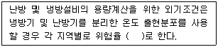
- 1%
- 1.5%
- 2%
- 2.5%
(정답률: 51%)
86. 다음은 환기구의 안전에 관한 기준 내용이다. ( )안에 알맞은 것은?
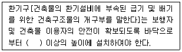
- 1m
- 2m
- 3m
- 4m
(정답률: 73%)
87. 건축법령상 교육연구시설에 속하지 않는 것은?
- 도서관
- 유치원
- 어린이집
- 직업훈련소
(정답률: 56%)
88. 문화 및 집회시설로서 모든 층에 스프링클러설비를 설치하여야 하는 수용인원 기준은? (단, 동·식물원은 제외)
- 50명 이상
- 70명 이상
- 100명 이상
- 150명 이상
(정답률: 72%)
89. 건축물의 에너지절약설계기준상 다음과 같이 정의되는 용어는?
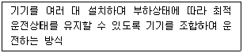
- 대수제어운전
- 대수분할운전
- 비례제어운전
- 가변속제어운전
(정답률: 60%)
90. 연면적 200m2를 초과하는 건축물에 설치하는 계단에 관한 기준 내용으로 옳지 않은 것은?
- 높이가 3m를 넘는 계단에는 높이 3m 이내 마다 유효너비 120cm 이상의 계단참을 설치할 것
- 높이가 1m를 넘는 계단 및 계단참의 양옆에는 난간(벽 또는 이에 대치되는 것을 포함한다)을 설치할 것
- 문화 및 집회시설 중 공연장에 쓰이는 건축물의 계단의 경우, 계단 및 계단참의 너비를 120cm 이상으로 할 것
- 계단의 유효 높이(계단의 바닥 마감면부터 상부 구조체의 하부 마감면까지의 연직방향의 높이를 말한다)는 1.8m 이상으로 할 것
(정답률: 52%)
91. 업무시설로서 건축허가등을 할 때 미리 소방본부장 또는 소방서장의 동의를 받아야 하는 대상 건축물의 연면적 기준은?
- 연면적이 200m2 이상인 건축물
- 연면적이 400m2 이상인 건축물
- 연면적이 600m2 이상인 건축물
- 연면적이 800m2 이상인 건축물
(정답률: 50%)
92. 비상용 승강기 설치 대상 건축물로서 높이 31m를 넘는 각 층의 바닥면적 중 최대 바닥면적이 6000m2 일 때, 설치하여야 하는 비상용 승강기의 최소 대수는?
- 1대
- 2대
- 3대
- 4대
(정답률: 48%)
93. 세대수가 10세대인 주거용 건축물에 설치하는 음용수용 급수관의 지름은 최소 얼마 이상이어야 하는가?
- 30mm
- 40mm
- 50mm
- 60mm
(정답률: 63%)
94. 다음의 소방시설 중 소화활동설비에 속하지 않는 것은?
- 옥내소화전설비
- 비상콘센트설비
- 연결송수관설비
- 무선통신보조설비
(정답률: 53%)
95. 건축물의 용도변경과 관련된 시설군 중 영업시설군에 속하는 것은?
- 의료시설
- 운동시설
- 업무시설
- 문화 및 집회시설
(정답률: 50%)
96. 다음은 건축설비 설치의 원칙에 관한 기준 내용이다. ( )안에 알맞은 것은?
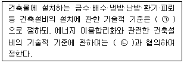
- ㉠ 국토교통부령, ㉡ 산업통상자원부장관
- ㉠ 산업통상자원부령, ㉡ 국토교통부장관
- ㉠ 국토교통부령, ㉡ 과학기술정보통신부장관
- ㉠ 과학기술정보통신부령, ㉡ 국토교통부장관
(정답률: 66%)
97. 건축법령상 아파트는 주택으로 쓰는 층수가 최소 얼마 이상인 주택을 말하는가?
- 3개 층
- 5개 층
- 7개 층
- 10개 층
(정답률: 76%)
98. 다음은 리모델링에 대비한 특례 등에 대한 기준 내용이다. ( )안에 알맞은 것은?
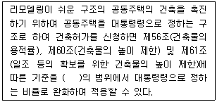
- 100분의 110
- 100분의 120
- 100분의 140
- 100분의 150
(정답률: 61%)
99. 비상용 승강기의 승강장에 설치하는 배연설비의 구조에 관한 기준 내용으로 옳지 않은 것은?
- 배연구 및 배연풍도는 불연재료로 할 것
- 배연구가 외기에 접하지 아니하는 경우에는 배연기를 설치할 것
- 배연구에 설치하는 수동개방장치 또는 자동개방장치는 손으로도 열고 닫을 수 있도록 할 것
- 배연구는 평상시에는 열린 상태를 유지하고, 배연에 의한 기류로 인하여 닫히지 아니하도록 할 것
(정답률: 68%)
100. 소리를 차단하는데 장애가 되는 부분이 없도록 건축물의 피난·방화구조 등의 기준에 관한 규칙에서 정하는 구조로 하여야 하는 대상에 해당하지 않는 것은?
- 숙박시설의 객실 간 경계벽
- 의료시설의 병실 간 경계벽
- 업무시설의 사무실 간 경계벽
- 교육연구시설 중 학교의 교실 간 경계벽
(정답률: 65%)